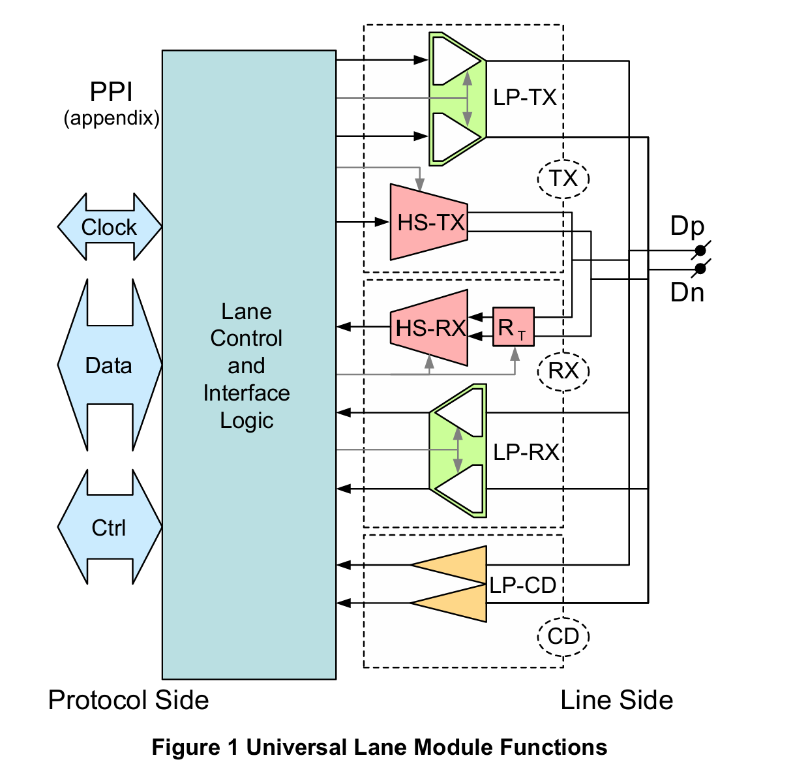

MIPI-DPHY
本文最后更新于：2024年4月11日 下午
- 参考
1.D-PHY Lane
可适用于Camera及Display场景。
管脚连接
下图为一个Lane的管脚示意图，其包括功能
LP-TX、LP-RX、HS-TX、HS-RX、LP-CD。- 其中LP：Low Power，HS：High Speed，CD：Contention-Detectors。
- 可以对上面介绍的接口进行剪裁，根据设计选定。
最终输出接口为
Dp、Dn，为传输的一组差分/单端信号，根据LP/HS决定。 

D-PHY 时钟
- 其时钟为DDR(Double Data Rate)，双边沿采样，采用源同步的传输方式，时钟信号始终由Master提供给Slave。
D-PHY Lane 主要由 Clock Lane 和 Data Lane组成，两者有部分特性是相同的，有部分特性是不同的，将在1.1小节介绍。
1.1 相同特性
D-PHY Lane 的模式分为了 2 种：High-Speed / Low-Power.
- High-Speed: 用于高速的数据传输，如图像数据传输。
- Low-Power: 用于一些控制信息，如一些指令。
- 无论是哪种模式，数据传输都是LSB First、MSB Last.
两种模式信号摆幅如下。
- 其中HS模式下，Lane上传输的是差分信号，摆幅更小；
- LP模式下，Lane上两根线传输的是两个独立的信号，是单端信号，摆幅更大。

传输特性和方向
- 对于差分时钟信号，是单向的，Master -> Slave。
- 对于数据信号，在HS模式下，均为单向传输(Unidirectional)；在LP模式下，允许半双工的双向传输(Bi-directional)，反向传输速度只有正向传输的1/4.
- 在LP模式下(包括Control Mode和Escape Mode)，采用Spaced-One-Hot Coding机制。
- 在该机制下，时钟可以在传输的数据中被体现，因此不需要传输时钟，用户可以据此关闭Clock Lane来降低功耗。
状态码
将Lane两个模式下的两根线不同信号值组合表示不同的状态，后续介绍的模式转变、双向传输均需要组合不同的状态码实现不同的事件。

1.2 D-PHY Data Lane 特性
LP-HS 模式转变
Data Lane 从LP模式进入HS模式，需要按照协议发送一个 Start-of-Transmission (SOT) Sequence。具体内容可参考D-PHY协议。
- LP Stop state - HS-Rqst state - Bridge state - HS0 - Inserts HS Sync-Sequence - 继续传数据
同样，协议定义了一个End-of-Transmission (EoT) Sequence，推出HS模式，进入LP的Stop模式。
可以看到无论是SOT还是EOT序列，除了设置一些状态，对持续时间也有一定要求，防止切换错误。

双向传输 (Data Lane Turnaround)
这个操作可以让从机返回数据给主机，同样需要一些状态码进行组合。

Escape模式
低功耗模式下主要包含Control Mode和Escape Mode。若将Escape Mode再划分，可以划分为Mode和Trigger。
Mode可以划分为
Low-Power Data Transmission ：简称为 LPDT，意味在 LP 模式下进行数据传输，数据可以在低速情况下进行传输，也可以暂停发送，如下图所示；

Ultra-Low Power State：简称为 ULPS，超低功耗状态；进入该状态后将暂停数据发送，可通过设置LP-10，并等待
T_wakeup时间后，即可唤醒。
Trigger 主要用来触发 Reset。
进入Escape模式，依然是组合状态码，但若具体到哪个mode/trigger，需要添加协议规定的Entry Command。
还需注意，由于Escape mode 下使用的是 Spaced-One-Hot bit 的 encoding 的方式做数据的异步传输，因此只需要 Data Lane 就行了，不需要 Clock Lane。
1.3 D-PHY Clock Lane 特性
下图为Clock Lane 和 Data Lane 进入和退出 Low-Power 的时序。
- 进入Low-Power：
- 在 Data Lane 进入 Stop State 的时候，再经过
T_clk-post后，Clock Lane 才进入 HS-0 的状态，然后在 HS-0 持续 Tclk-trail后，进入到 LP-11 状态。
- 在 Data Lane 进入 Stop State 的时候，再经过
- 退出Low-Power：
- Clock Lane 先进入 LP-11，然后进入 LP-01 并位处 Tlpx，然后进入 LP-00 并维持一些时间 Tclk-prepare，然后维持 HS-0 ，时间为 Tclk-zero，之后 Clock Lane 就可以正常工作了；对于Data Lane，在经过 Tclk-pre 后再工作。

- 进入Low-Power：
Clock Lane 没有 Escape 模式，但是 Clock Lane 有 ULPS 模式。
- 状态码组合为：
LP-11、LP-10、LP-00.
- 状态码组合为：
2. 错误检测
- 有些错误可以在D-PHY层就检测出来，而有的错误只能在协议层检测出来。
2.1 争用检测(Contention Detection)
- 如果一个双向的Lane和一个单向模块组合到一起作为一条Lane使用，那么只有单向功能可用，此时需要将双向模块的双向特性禁用掉，否则可能导致死锁的发生。
- 对于双向通信的Lane，可能会出现争用。正常情况，连接的两端只能有一端去驱动，但由于故障可能导致两端同时驱动同一个Lane。
- 可能出现下面两种情况
- (1) Lane的两侧在相互驱动相反的LP电平。
- (2) Lane的一侧在驱动LP-High，一侧则在驱动HS-Low。
- 对于(1)，可以通过LP-CD和LP-RX组合检测；对于(2)，可以通过LP-RX检测。检测原理与电气规范相关。
- 低功耗模式下，当信号稳定后，每个bit周期都需要进行争用检测。
- 在ULPS模式下，不需要进行争用检测，因为可能没有可用的时钟，无法判断可检测的周期。
- 可能出现下面两种情况
- 在冲突被检测到之后，协议层要采取适当的措施解决问题。
2.2 序列错误检测(Sequence Error Detection)
- 某些原因可能导致Lane信号损坏，接收处的PHY可以检测到signal sequence错误，并通过PPI与协议层进行通信。
- 下面是 D-PHY 层可以监测到的 Sequence Error Detection：
- SoT Error
- SoT Sync Error
- EoT Sync Error
- Escape Mode Entry Command Error
- LP Transmission Sync Error
- False Control Error
2.3 协议层看门狗定时器
- 有些错误无法在PHY层被检测出来，因此需要额外的超时机制来限制特定模式和状态的最大持续时间，如果超出该时间，则认为出现问题。
- 使用场景如下：
- HS RX Timeout：HS RX模式下，如果特定时间没有收到 EoT，认为超时
- HS TX Timeout：HS TX模式下，发送时间是有限制的（比如用什么样的速率传输多少个数据），超过特定时间，认为超时。
- Escape Mode Timeout：
- Escape Mode Silence Timeout：
- Turnaround Error：在Turnaround实现过程中，存在一个关键的Turn State转换驱动关系；而看门狗检测的是指定时间内是否出现该状态，若没有，协议层则需要相关操作。
3. Skew Calibration
为什么需要Deskew
当传输速度大于1.5Gbps时，CLK Lane 和 Data Lane之间以及Data Lane 和 Data Lane之间可能存在相位偏差，导致容易采样到错误数据。
Spec规定当速率大于1.5Gbps时，RX端需要根据TX端发送的特殊的去偏斜(deskew) burst序列完成初始化，之后才能进行数据接收。
当速度小于1.5Gbps时，HS-Deskew是可选的，周期性deskew也是可选的。一旦链路速率发生变化，大于1.5Gbps之后，需要重新进行HS-Deskew操作。

如何操作
TX端发送一个16bit全部由1组成的同步帧，之后发送序列
01010101...0101数据至少持续215个Unit Interval（初始化deskew），或是210（周期化deskew）。Unit Interval：equal to the duration of any HS state on the Clock Lane.